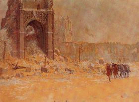
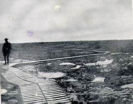
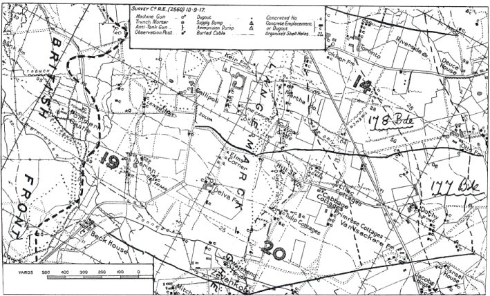
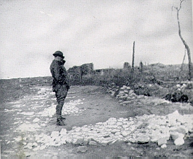

Ypres (Passchendaele) 1917
(text in italics is extracted from the 2/5 Leicesters War Diary)
1/9/1917 - Train journey much delayed by detour. Arrive and detrain at Proven . 4.15pm camp at Winnezeele . 37 officers and 884 other ranks.
After their arrival in Belgium the troops were stationed at Winnerzeele where they continued their training for the coming offensive on September 26th.
2-3/9/1917 - Winnezeele. Parade and training, Company attack practise.
4/9/1917 - Route march D'Ypres - Herzeele - Worminoudt - Kiekenput - Briel .
5-8/9/1917 - Training, attack practise and route march.
9/9/1917 - Church parade.
10-19/9/1917 - Training, practises, route marches and parades.
20/9/1917 - 4.10pm move from Winnezeele and arrive at Esk Camp at 9am.
21-22/9/1917 - Training
23/9/1917 - Battalion move to reserve trenches at St Jean by train from Chadderston to Ypres and route march.

24/9/1917 - 7.30pm Battalion take over front line from 176 Brigade at Hill 37 and Elmtree Corner . D Company in reserve at Hill 35 .
25/9/1917 - Bank Farm . Officer killed. Rifle grenades fired on hostile posts. Enemy aeroplane fired into trenches at 7.30am
The 177th Brigade was detailed as the right forward Brigade of the Division. The conditions were atrocious: "no one will ever lose the memory of the shell swept Wieltje crossroads with its nightly traffic jam - or of Number 5 mule track with its treacherous duck boards and its garland of foulness - or of Bank Farm and other farms of nondescript name, but specific odour."

The Ypres Salient
The weather was fortunately fine, but the nights were intensely cold. The taking over of the forward line of posts had been difficult but it was accomplished and hot soup was served before the bombardment began. At 5.50am the 2/4 and 2/5 Leicesters began their advance on the 'Red Line' This was the beginning of what later became known as the Battle of Polygon Wood. They used a tactic of maintaining a distance of 100 yards behind a creeping barrage that carried them easily over the devastated remains of the enemy strongpoints.
26/9/1917 - 2am bombardment starts. 5.50am Zero Hour. Battalion goes over to capture positions on Hill 37 . Platoons kept within 100 yards of creeping barrage and in some cases closer. There was a tendency to get too close. Hostile strong points caused little difficulty because of the closeness of the barrage. First objective taken at 6.37am and second objective at 8.30am. Bombardment on both sides continued all day. Consolidation of positions up to 12 noon Battalion HQ established in pill box on Hill 37 . German barrage on back areas. 4pm counter attack formed up but never materialised. Heavy hostile barrage through the night. Artillery active on both sides.
The first objectives were taken within two hours and prisoners, mostly Saxons and Bavarians, were seen coming back. The 3rd Division on the right were not so fortunate being held up by the very poor ground. The 178th Brigade on the left also had difficulty with Otto Farm, but by 2.50pm the 59th Division had taken all the objectives on its front. The four tanks that had been assisting the infantry had all been ditched by 10.15am owing to the difficult nature of the ground. The expected counter attacks came in the afternoon. They were severe and supported by intense artillery fire but they were successfully repelled and the front lines remained intact. The doctrine of 'bite and hold' had entered the language of trench warfare.

During the night of the 26th/27th there was a great deal of shelling and many casualties were inflicted amongst both forward troops and carrying parties.
27/9/1917 - Artillery and aerial action very active. Counter attack on the right at Zonnebeke .

28/9/1917 - Shelling for 5 hours not so heavy - some periods of quiet. Gas attacks and heavy explosives on back areas.
29/9/1917 - Old German Front Line. Heavy shelling with 'whiz bangs' many casualties. Counter attack by Germans in the afternoon feeble and beaten off.
The battalion remained in the line, in a constantly changing series of muddy shell holes and under heavy fire until September 30th. Many casualties were sustained during this period, rather than during the attack itself thanks to an effective barrage. Casualties for the brigade as a whole during three days of battle were 36 officers and 965 other ranks. The operation was considered a success.
30/9/1917 Quiet - enemy aeroplane dropped flare on Hill 37 . Relieved by Otago Rgt at night. Battalion shelled on the Wieltje Road , 25 casualties. Total casualties of tour 10 officers killed, 61 other ranks, 184 wounded and 25 missing
1/10/1917 - Passed day in reserve trenches and at 7pm marched out to Vlamertinge hutments. 27 officers 613 other ranks.
After relief by the Australians the whole Division was removed from the Salient being considered too weakened by the losses sustained to carry out further attacks.. On October 6th the 59th Division was transferred from the Vth to the IIIrd Army.
2/10/1917 - Thiennes. Proceeded there by train arriving at 6pm
3/10/1917 - Rest and clean up and equipping
4-5/10/1917 - Training and service
6/10/1917 - From 8am-1pm march and bus to Beaumetz-Lel-Aire .
7/10/1917 - Training and parade.
10/10/1917 - 8.30am march to Camblain-Chatelain arrive at 3pm
11/10/1917 - 11am march to Houdain arrive at 12.30pm
12/10/1917 - 9am march to Gouy-Servins arrive at 12noon.
Training, refitting and the replacing of casualties continued until 13th October, during which period a move was made to the Lens area.